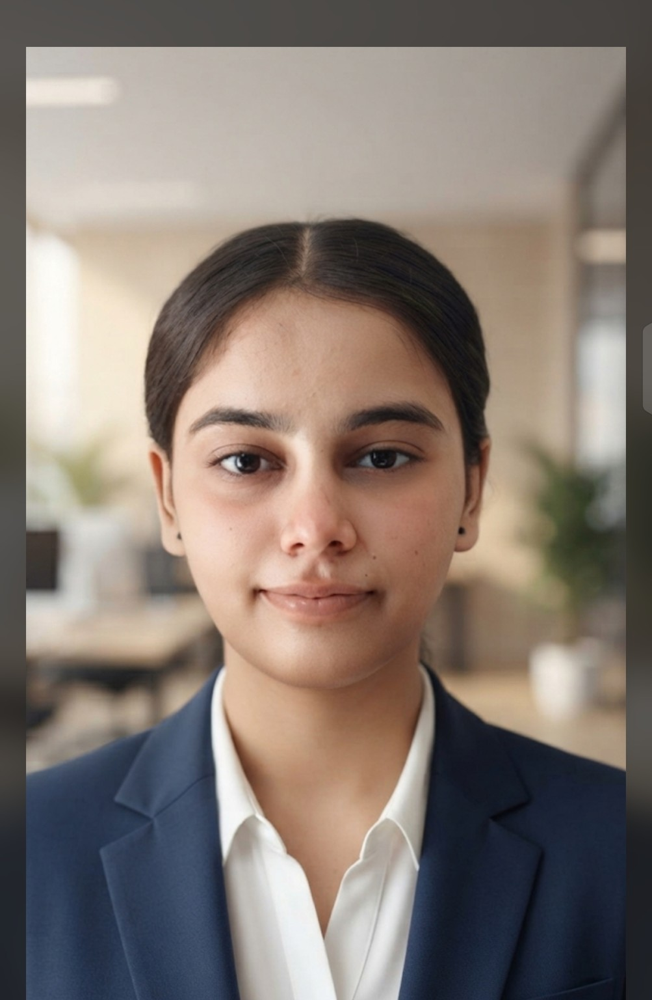

Human Anatomy & Physiology
Understanding the structure and function of the human body.
PERSONAL ACADEMIC PORTFOLIO · 2026
B.Pharm Student · First Semester
Exploring the science behind medicines, understanding the principles of healthcare, and building a foundation for a meaningful future in pharmaceutical sciences.

01 — THE PERSON BEHIND THE PROFILE
I am at the beginning of my journey in pharmaceutical education, driven by a growing interest in how scientific knowledge becomes meaningful healthcare.
As a Bachelor of Pharmacy student, I am developing an understanding of medicines, their properties, and the scientific principles that support their safe and effective use. I am particularly curious about the relationship between pharmaceutical chemistry, pharmacology, pharmaceutics and the natural sources of medicinal compounds.
My current priority is to build strong fundamentals: learning carefully, approaching practical work responsibly, and improving the way I observe, analyse and communicate scientific information.
Over time, I hope to explore pharmaceutical research and the wider industry, while remaining open to the opportunities that experience and further learning may bring.
02 — ACADEMIC PROFILE
A developing academic record, updated as my education progresses.
First Semester · Academic year 2026–2027
Illustrative programme progress. Update this indicator as semesters are completed.
Understanding the structure and function of the human body.
Exploring chemical principles relevant to medicines.
Learning the foundations of dosage forms and drug delivery.
Studying crude drugs and medicinal substances from natural sources.
Introduction to methods used to examine pharmaceutical materials.
Developing clear scientific communication and presentation skills.
03 — SKILLS & COMPETENCIES
Areas I intend to develop through coursework and supervised learning — not claimed as mastered skills.
04 — AREAS OF INTEREST
These are developing interests to explore during my education, not areas of professional specialisation.
How medicines interact with biological systems.
The scientific journey from a promising compound to a potential medicine.
Designing dosage forms for stability, quality and use.
The role of medicines in patient-centred healthcare.
Medicinal substances and compounds from natural sources.
Systems that support consistent pharmaceutical quality.
Biological approaches shaping modern therapeutics.
New ideas that may improve access, delivery and outcomes.
05 — ACADEMIC WORK & PRACTICAL LEARNING
A space for coursework, practical records and academic explorations. Add an entry only after the work has been completed.
06 — LABORATORY & PRACTICAL EXPOSURE
Good scientific practice begins with careful observation, responsible handling and accurate documentation.
A learning principle I aim to carry into every practical session.Understanding safe conduct, protective equipment and responsible handling.
Recognising common equipment and learning its correct use.
Building introductory familiarity with pharmaceutical practical methods.
Recording procedures, observations, calculations and results clearly.
Practising the numerical foundations used in pharmacy coursework.
This section describes educational exposure and learning objectives. It does not represent independent professional laboratory experience.
07 — CERTIFICATIONS & ACHIEVEMENTS
Only verified achievements should be listed here. No certificates or qualifications are pre-filled.
No certificates added yet.
When available, include the title, issuing organisation, date and certificate file or link.Explore relevant practical and academic workshops.
Build awareness of current topics in pharmaceutical sciences.
Look for opportunities to participate in awareness initiatives.
Identify suitable learning courses as my academic foundation grows.
08 — FUTURE ROADMAP
An aspirational roadmap. These milestones are plans, not completed achievements or guaranteed outcomes.
09 — PERSONAL PHILOSOPHY
“I believe meaningful progress comes from staying curious, respecting the process of learning and being willing to improve. I am beginning with questions, building with discipline, and keeping my perspective open to what the field may teach me.
DIYA CHANDER10 — CONTACT & PROFESSIONAL PRESENCE
For academic conversations, professional networking and relevant learning opportunities.